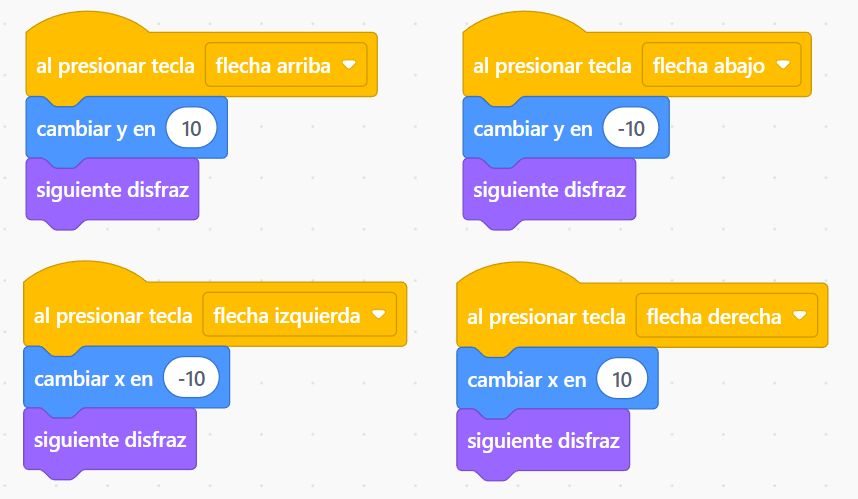
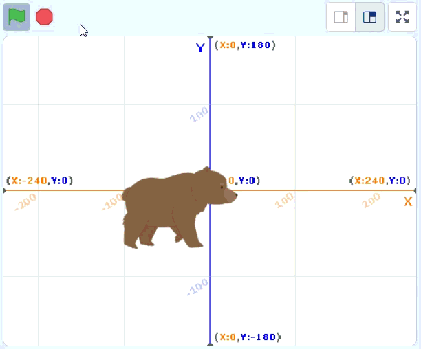

Controla al personaje con las flechas
Usa los eventos al presionar la tecla para mover un personaje con las flechas del teclado, tal como se muestra en la animación. Agrega un oso al escenario y replica los siguientes bloques.

Con estos bloques el personaje se mueve con las flechas.

Así se ve el oso moviéndose.
💡
Para que la animación se vea mejor cuando el objeto llegue a los extremos, usa dos bloques que ya conoces del ejercicio del ave: Fijar estilo de rotación a izquierda-derecha y Si toca un borde rebotar. Recuerda: el primero se usa al iniciar el programa y el segundo debe ir dentro de un bucle por siempre, porque se evalúa todo el tiempo. ¡A ti te toca hacer esta parte del código para mejorar la animación!
💡
Si quieres puedes seleccionar otro personaje, pero asegúrate de que tenga disfraces que simulen su movimiento.